森ではじまる、
家族のものがたり。
盛岡市都南にある自然体験型の公園「つどいの森」。キャンプ、テニス、グラウンドゴルフ、バーベキュー、木工体験——お花見の春から紅葉の秋まで、四季をまるごと遊びつくせます。
キャンプ場の営業期間は4月〜11月です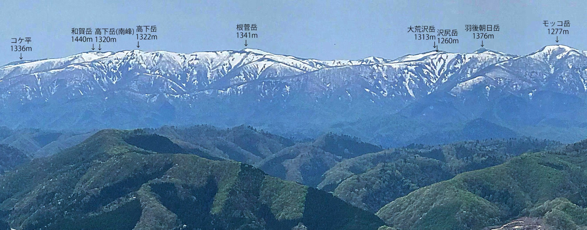
つどいの森からのお知らせ
つどいの森感謝祭 ありがとうございました
お天気にも恵まれ、たくさんの方にお越しいただきました。体験コーナーや青空木工体験、クラフト体験、フリーマーケット、特設屋台コーナー。園内のあちこちで、にぎやかな一日になりました。
数えられたかぎりで387名のご来場
足を運んでくださったみなさま、出店・ご協力いただいたみなさま、ほんとうにありがとうございました。おかげさまで盛況のうちに終えることができました。
これからもつどいの森は、森で遊び、学び、憩う場所であり続けたいと思います。どうぞ変わらぬおつきあいを、よろしくお願いいたします。
ありがとうございました。
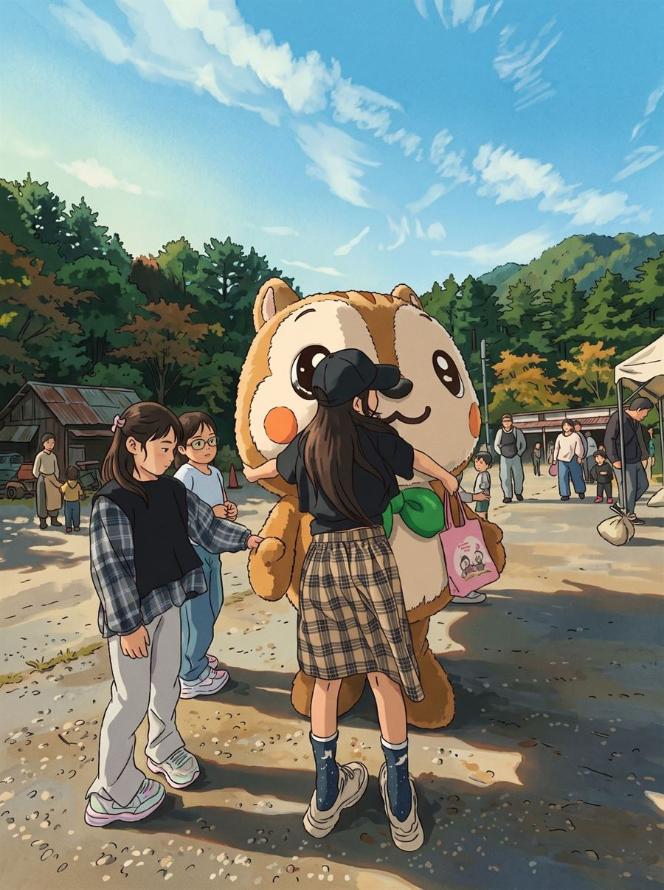
10月25日(日) あかばやし探検隊「サバイバルクッキング」参加者募集
10月の恒例行事です。野外で火を焚いて、牛肉シュラスコ、段ボール燻製器でつくる豚バラベーコン、丸鶏の塩竃焼き、焼石を入れる魚介の浜鍋、焼きリンゴピザなどを作ります。9:00〜15:00、参加料は大人・子ども1,000円、幼児500円（家族割引あり）。
持ち物など詳しいご案内と申し込みは 申し込みフォーム をご覧ください。
10月17日(土)「森のトリセツ：竹の器と竹筒ご飯」参加者募集中
竹筒を炊飯器にして、炭火で直火にかけます。ほんのり竹の香りがする竹筒ご飯のほか、竹筒キノコご飯や竹筒ビリヤニも。13:00〜15:00、参加費500円、定員15人（抽選）。岩手県内在住の方が対象です。
お申し込みは 019-637-0877 へお電話いただくか、応募フォームからどうぞ。
10月31日(土)「大人のあかばやし探検隊：須賀倉山に登る」参加者募集
紫波町の最高峰、登山道のない須賀倉山（すがくらやま）を目指します。9:00〜16:00、参加費1,000円、定員15人（抽選）。岩手県内在住の方が対象です。
申し込みは10月18日(日)9:00から。019-637-0877 へお電話いただくか、応募フォームからどうぞ。
11月3日(火)「森のトリセツ：色とりどりの葉っぱでインスタグラデーション」参加者募集
紅葉を採取し、虹色の葉っぱを色別に並べてグラデーションを作ります。10:00〜12:00、参加費500円、定員15人（抽選）。岩手県内在住の方が対象です。
申し込みは10月18日(日)9:00から。019-637-0877 へお電話いただくか、応募フォームからどうぞ。
10月4日(日)「熱水変質帯のナメ沢登りで行く箱ヶ森」を開催しました
矢櫃川滝ノ沢をキノコを採りながら沢登りして箱ヶ森へ。当日の写真集とGPSログを公開しています。ルート図・3D動画つきの詳細はこちら
ホームページリニューアル試験運用中
現在試験運用中です。不具合を確かめた後、2026年10月中にリニューアルサイトとして新たに刷新した内容で運用を開始します。
つどりんピック グラウンドゴルフ大会は11月5日(木)
令和8年度の締めくくりとなる大会です。どなたでも参加できます。日程と過去の結果はイベント情報ページへ
つどいの森であそぶ、3つのステップ
あそびを決める
キャンプ、BBQ、日帰り、体験学習…施設案内から、やってみたいことを探しましょう。
予約する
多くの施設は3日前まで（BBQハウスは5日前まで）にお電話または直接ご来園でご予約ください。
森へ来園
受付は管理棟にて。当日は季節に合わせた服装・持ち物でお越しください。
四季の楽しみ方
キャンプ場や球技施設は4月〜11月のご利用が中心ですが、体験活動は一年を通して行っています。季節ごとの楽しみ方をご覧ください。
キャンプから様々な野外アクティビティまで
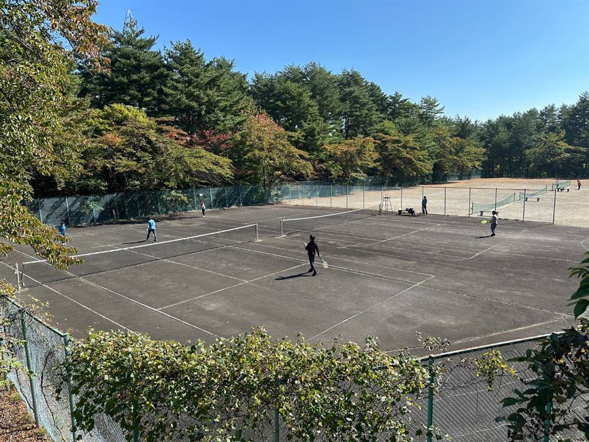
テニスコート料金表を見る
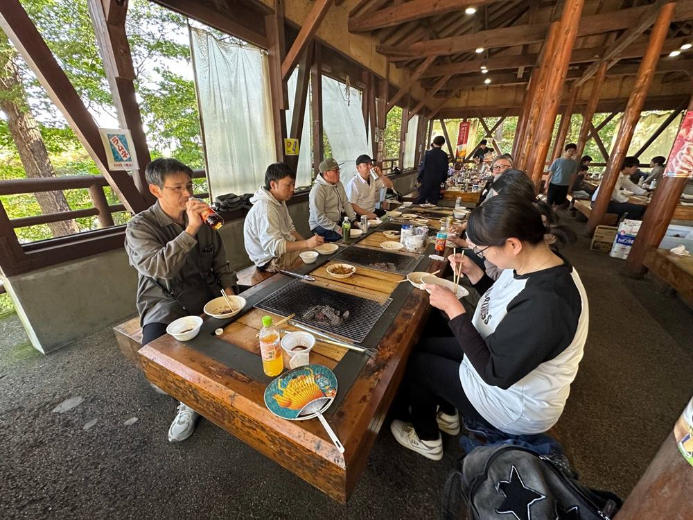
バーベキューハウス料金表を見る
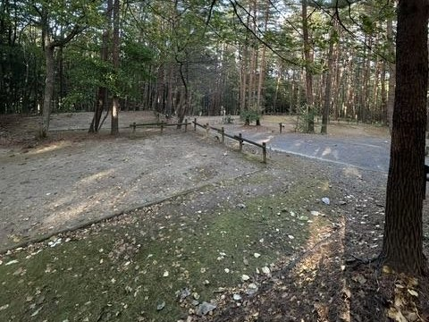
オートキャンプサイト料金表を見る
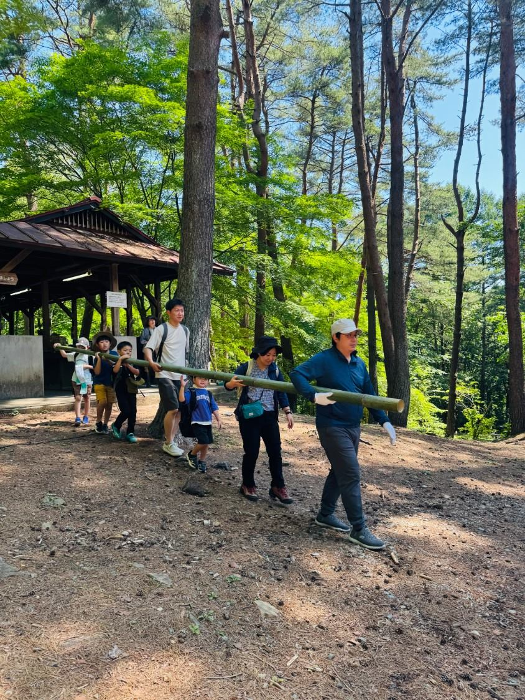
野外調理用炊事棟無料・詳細準備中
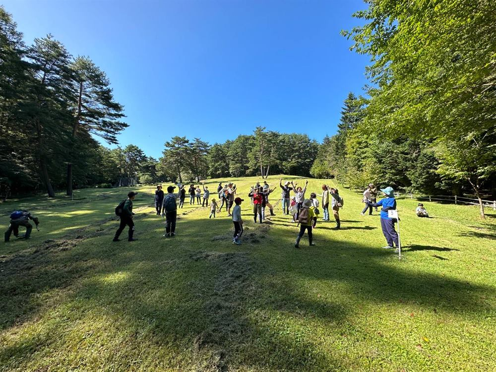
芝生広場無料・詳細準備中
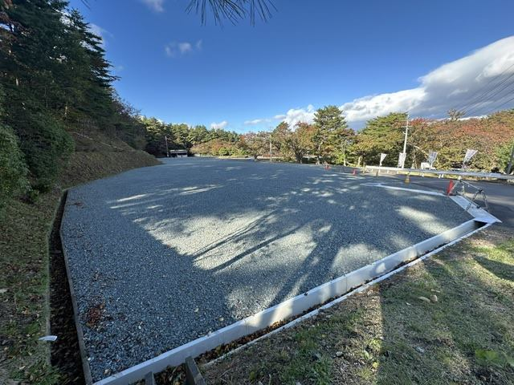
多目的広場（こもれび広場）有料・詳細準備中
自然のふしぎ、人の営みをたどるコラム
葉っぱの小さな穴にも、川原の石ころにも、昔から伝わる遊びにも、知らなかった世界への入口があります。森で遊び、気づき、調べ、考える。そんな好奇心から生まれた、一話完結の読みものです。
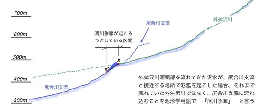
川が、川を奪う
となりの川から水を奪う「河川争奪」。動くアニメーションで5段階に追いかけます。
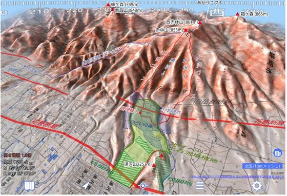
つどいの森は、なぜ平らなのか
山のふもとなのに、ここだけ平ら。その答えは数千年前の地すべりにありました。
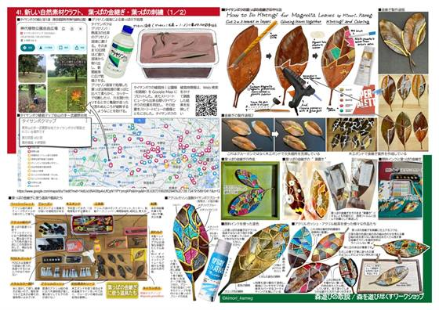
葉っぱの金継ぎ
タイサンボクの落ち葉を継いで彩る新しい自然素材クラフト。下処理から仕上げのコツまで紹介します。
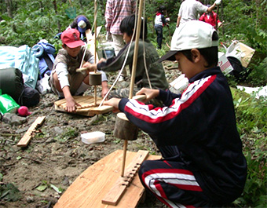
火おこし作業中！
あかばやし探検隊の一コマ。マッチを使わず、道具と工夫で火をおこす体験です。
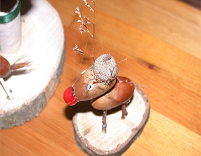
どんぐりで作る、森の工作
拾ったどんぐりや木の実を組み合わせて、動物や置物を作る工作の様子です。